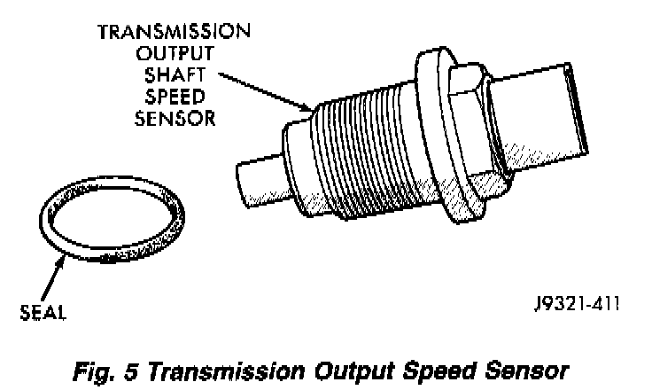

Sensor Operation
Fig. 5:

The speed sensor (Fig. 5) is located in the overdrive gear case. The sensor is positioned over the park gear and monitors transmission output shaft rotating speed. Speed sensor signals are triggered by the park gear lugs as they rotate past the sensor pickup face. Input signals from the sensor are sent to the transmission control module for processing. The vehicle speed sensor also serves as a backup for the transmission speed sensor. Signals from this sensor are shared with the powertrain control module.